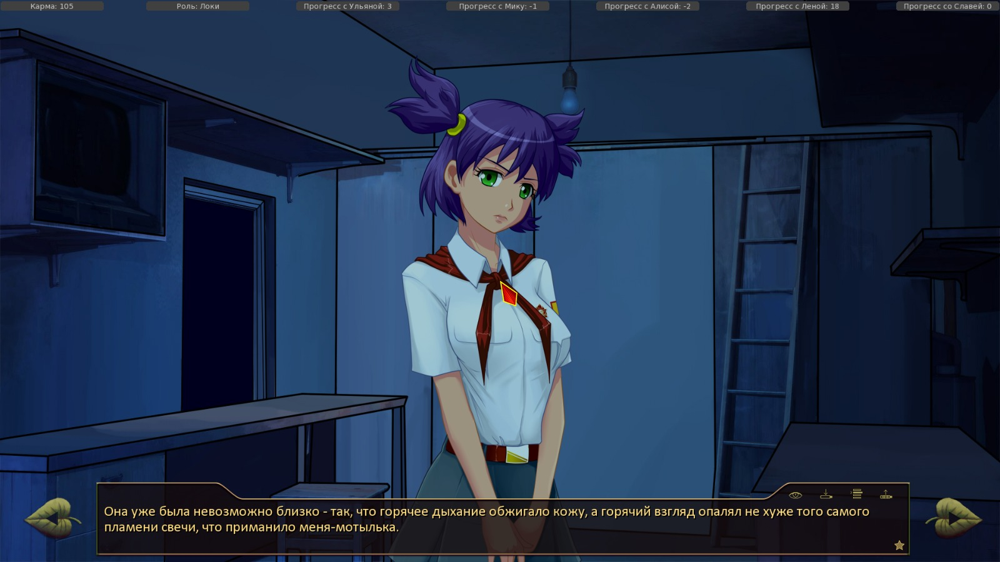
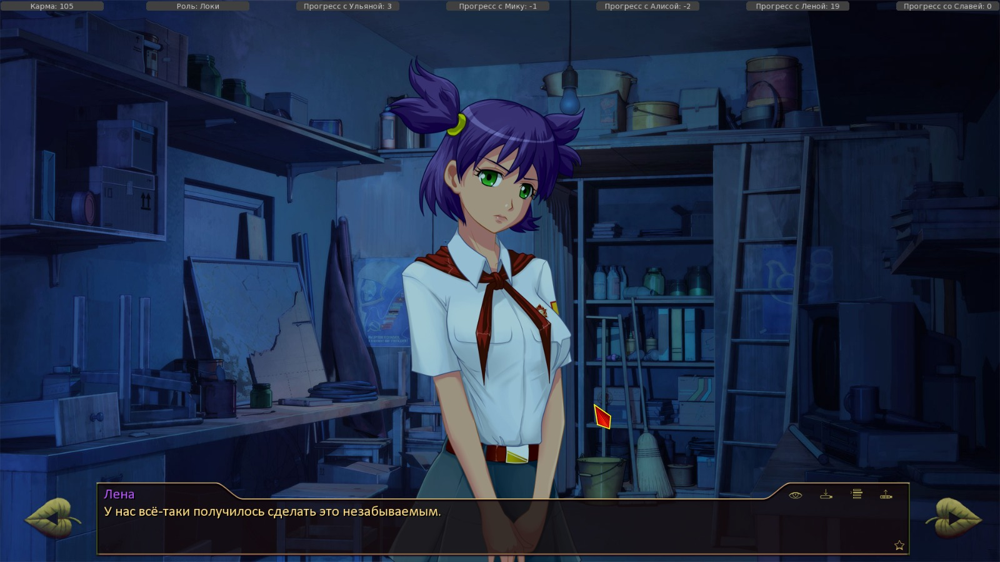
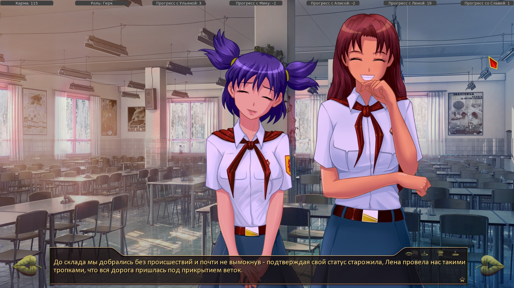

7 дней лета, билд 0.23d (Славя-классик, д.5)
Страница 9 из 11 •  1, 2, 3 ... 8, 9, 10, 11
1, 2, 3 ... 8, 9, 10, 11
Re: 7 дней лета, билд 0.23d (Славя-классик, д.5)
автор Kirikaru в Вт 22 Сен 2015 - 8:38
Kirikaru- Ньюфаг

- Сообщения : 8
Дата регистрации : 2015-09-21
Re: 7 дней лета, билд 0.23d (Славя-классик, д.5)
автор Surv в Вт 22 Сен 2015 - 16:08
Почему ошибка-то сразу? После реанимирования наверное она сняла галстук и расстегнула пару пуговиц.Она же не могла этого сделать будучи без сознания,так?.К тому же её потом тошнило.Я думаю тут нет ошибок.Dantiras пишет:Репортовал - мне ответили, что нужно изменить, и оно починилось. Вроде всё тот же файл из последней версии, но шайтан-ренпай его почему-то больше возлюбил и прекратил выкидывать.Arlien пишет:Дык на предыдущей странице. Дант рапортовал.
Теперь о деле. Вновь по alt_route_un_7dl.
Внимательно сегодня призадумался над ЦГ d7_un_reanimation. Сейчас в этом рисунке заключена ошибка. Поскольку теперь в финальном дне Лена-рута она предстаёт пред нами без пионерского галстука, наличие его (галстука) на указанной ЦГ неуместно.
- d7_un_reanimation:
- Текущий спрайт Лены д.№7:


Раз уж на то пошло,то Сёма должен был снять галстук с рубашкой с Лены,а уже потом делать реанимирование,но это была экстренная ситуация.Некоторое просто вылетает из головы,согласен?
Surv- Хикка

- Сообщения : 114
Дата регистрации : 2015-06-06
Re: 7 дней лета, билд 0.23d (Славя-классик, д.5)
автор Surv в Вт 22 Сен 2015 - 16:13
"Вчера я был в определённом, помрачённом состоянии сознания, поэтому напрочь не помнил где и в каких местах здесь чьей-то щедрой рукой были рассыпаны перекрёстки."
"И эту развилку тоже."
else:
me "Помнишь, как мы вчера шли?"
show sl smile pioneer with dspr
sl "Вообще-то, это ты нас вёл."
"Улыбнулась Славя."
show sl normal pioneer with dspr
sl "Ещё и с видом, будто каждый день здесь ходишь."
Мне кажется такого не должно быть,раз в шахте небыл.
Surv- Хикка
- Сообщения : 114
Дата регистрации : 2015-06-06
Re: 7 дней лета, билд 0.23d (Славя-классик, д.5)
автор Dantiras в Вт 22 Сен 2015 - 16:35
Объясняю подробнее Суть™. В приведённых во вложении скринах со спрайтами показан вид Леночки до той самой сцены реанимации её в лагерном туалете. Весь день №7, с самого для Семёна начала, она щеголяет перед нами в блузке, одетой на более фривольный манер. А галстук - похоже, лежит так и неодёванный за целые сутки в её домике. Так что ошибка имеет место быть.Surv пишет:Раз уж на то пошло,то Сёма должен был снять галстук с рубашкой с Лены,а уже потом делать реанимирование,но это была экстренная ситуация.Некоторое просто вылетает из головы,согласен?

Dantiras- Мизантроп

- Сообщения : 615
Дата регистрации : 2015-08-17
Re: 7 дней лета, билд 0.23d (Славя-классик, д.5)
автор Surv в Вт 22 Сен 2015 - 16:42
Тогда извиняюсь,я её рут не перечитывал,так что об изменениях не в курсеDantiras пишет:Объясняю подробнее Суть™. В приведённых во вложении скринах со спрайтами показан вид Леночки до той самой сцены реанимации её в лагерном туалете. Весь день №7, с самого для Семёна начала, она щеголяет перед нами в блузке, одетой на более фривольный манер. А галстук - похоже, лежит так и неодёванный за целые сутки в её домике. Так что ошибка имеет место быть.Surv пишет:Раз уж на то пошло,то Сёма должен был снять галстук с рубашкой с Лены,а уже потом делать реанимирование,но это была экстренная ситуация.Некоторое просто вылетает из головы,согласен?
Surv- Хикка
- Сообщения : 114
Дата регистрации : 2015-06-06
Re: 7 дней лета, билд 0.23d (Славя-классик, д.5)
автор Dantiras в Вт 22 Сен 2015 - 22:05
Спрайты
№1 alt_day2_ultim
Строки 11519-11522
- Код:
me "Но ведь ты первая начала! Ты меня тормознула, начала обзываться и брать на понт. Напрасно."
show dv shy pioneer2 with dspr
if alt_day2_rendezvous == 3:
me "Если ты хочешь меня на ответное свидание позвать, то могла бы сказать и так. Итак, где и когда?"
- Код:
show dv smile pioneer2 with dspr
"И если до этого Алиса просто играла, пытаясь прощупать меня на предмет слабины, то сейчас, кажется, она увязла по полной!"
"Все эти многозначительные подмигивания, подёргивания уголков глаз…"
Возможное решение Перенести строку со спрайтом (11520) под условие (if alt_day2_rendezvous == 3).
Правописание
8753 "С футбольного поля полу-восторженно, полу-злобно донеслось:" Приставка «полу» всегда пишется слитно с корнем
1029 "Застывшие во мгновении полёта гипсовые пионеры, стоящие по разные стороны от полу-открытых фигурных ворот с колышками сверху." См. выше
10646 "Ульянка догнала меня на полу-пути и ловко спрыгнула с купальни на кормовую банку, заставляя судно трястись и плясать." См. выше
15786 "Говоря проще, я погрузился в полу-воспоминание, полу-грёзу…" См. выше
16835 "Она летала над сценой как пушинка, полу-закрыв глаза и вся посвятив себя исполняемой музыке, и меня, пусть и запоздало, но кольнуло острой иголочкой ревности — в сердце этого человека музыка всегда будет на первом месте." См. выше
5526 "Алиса вернулась через пол-минутки, уже приведя в порядок форму и даже частично разгладив замятости от узла." Приставка «пол» пишется слитно с корнем, кроме случаев начала корня на гласную, «л», или если корень является именем собственным (примеры: пол-арбуза, полбаклажана, пол-лимона, пол-Таймыра)
21758 "Ноги уже почти не болели, а игра с покусыванием мочек ушей, которую затеяла Славяна на пол-дороги, здорово скрасила маршрут, чисто субъективно сократив его минимум втрое." См. выше
2811 "Я сделал пол-шага назад и, весь напруживнившись" См. выше
8470 "Несколько минут поисков дали нам две пары наушников — сломанные, несколько моно-выходов и наконец один вменямый миниджек с небольшим запасом провода." Приставки иностранного происхождения пишутся всегда слитно с корнем (примеры: моносукцинат, поливинилпирролидон, архизанудный, постапокалиптический, контраргумент).
16192 "Я добил несчастное какао и вышел из-за стола.{w} Меня ждал мега-квест по уборке столовой." См. выше
489 "Мои зовутся «пост-травматический синдром», ими меня наградили в одном городке рядом с горами." См. выше
1761 "В практике йоги есть понятие асаны, когда тело уравновешивается в неподвижности, тем самым разгружая подсознание, обычно отвечающее за поддержание равновесия и микро-движения тела." См. выше
101 "Я прислонился лбом к холодному стеклу. Всегда хотелось иметь альтер-эго, эдакое раздвоение личности, с которым можно будет поболтать." ”Alter” non praefixum, sed adiectivum est. «Alter» – не приставка, а, в данном случае, вполне самостоятельное прилагательное с определяемым словом «ego» (фактически, мы всего лишь кириллицей написали латинский текст). Потому «другое я» (альтер эго) пишем раздельно. НО! Если иностранная часть речи является наречием или существительным, то в составных словах следует писать её через дефис. Примеры: экспресс-анализ, онлайн-трансляция, соло-гитара (перед дефисом наречия), байк-шоу, бизнес-гайд, вамп-медсестра (перед дефисом существительные)
951 "Именно поэтому я машу ладонью водителю ЛиАЗа - старенького, красного, сейчас таких и не встретишь почти - всё заменили евро-новоделы." Пишем слитно, потому что «евро» оканчивается на гласную. Примеры: Евровидение, евроремонт, евротур, Евросоюз
13311 "Трудно было сказать, чего я ждал – может, у моря погоды, а может момента, когда у меня наконец достанет духу подняться на крылечко и позвать гулять одну знакомую девочку «просто так»." Лишняя запятая
6454 me "Скарлетт О-Хара. Я подумаю об этом завтра." Ирландские фамилии на О’ передаются не через дефис, а с апострофом: О’Тул, О’Салливан, О’Нил
Dantiras- Мизантроп
- Сообщения : 615
Дата регистрации : 2015-08-17
Re: 7 дней лета, билд 0.23d (Славя-классик, д.5)
автор Kirikaru в Вт 22 Сен 2015 - 23:08
Kirikaru- Ньюфаг
- Сообщения : 8
Дата регистрации : 2015-09-21
Re: 7 дней лета, билд 0.23d (Славя-классик, д.5)
автор Dantiras в Вт 22 Сен 2015 - 23:17
PPK - ResurrectionKirikaru пишет:реквестирую помощь,подскажите трек играющий в конце рута Лены,концовка "вся жизнь впереди",во время полёта в космос,сам трек очень знакомый,но я так и не вспомнил название,а в треклисте перерыл уже больше половины треков,но так и не нашел.
Dantiras- Мизантроп
- Сообщения : 615
Дата регистрации : 2015-08-17
Re: 7 дней лета, билд 0.23d (Славя-классик, д.5)
автор Ленофаг Простой в Ср 23 Сен 2015 - 0:13
- всякое-разное, актуальное на 23Д:
- Общий рут
920 - зас(ё)[е]кла
7621 - Ты ведь мне поможешь?(.)
карты:
1743 - бросил пренебрежительный взгляд на несчастную Алису[.]
1745 - горн(и)[ы]м
Общий рут
17196 - тавро нигде не появил[о]сь?
17261 - мелькнул(ы)[и]
21609, 21613, 21614 - Семён вроде как одевает Славю, но дальше показывается спрайт голой Слави(21619), либо Славя в лифчике(21617)
21625 - sl cry swim not found, ибо не прописан в коде alt_res_sprites. Плачущая Славя для платья и пионерской формы кстати прописаны.
21647 - б(е)[ы]ло несколько безответственно
21723 - поднял бюстгалтер //опять-таки Славя до этого появлялась в лифчике
21727 - на голо(в)е тело
Славя, день 4
18 - сафаранчике
154 - Если продолжить двигаться в избранном направлени(ю)[и], то дорожка выведет
232 - мазью Вишн(ио)[е]вского
___________________________________
292 - sl "Между прочим, и правда хотела медициной заниматься.{w} А потом ветеринаром стать."
293 - me "А сейчас?"
294 - sl "Краеведением, наверное.{w} Или экологией."
//здесь надо было бы вспомнить поход за картами во 2-м дне в случае Локи (11357), где Славя загорелась идеей стать спасателем
___________________________________
360 - 373 Спрайт Электроника перекрывается спрайтом Жени
528 - Возможно, та(к)[м] стоит пугалка-дератизатор, чтобы грызуны проводку не погрызли.
1769 - "Старый корпус выглядел пугающе знакомым."
1770 - "Я даже примерно мог сказать, какая куда вела //о чём речь?
1790 - та(к)[м] какой-нибудь гадости
Помимо всего прочего, виджет отображает версию 0.23d как 0.23b

Ленофаг Простой- Сыч

- Сообщения : 86
Дата регистрации : 2015-03-09
Возраст : 21
Re: 7 дней лета, билд 0.23d (Славя-классик, д.5)
автор Dantiras в Ср 23 Сен 2015 - 0:23
Автор уже отписывался по этому поводу в 0.22 билде.Ленофаг Простой пишет: 360 - 373 Спрайт Электроника перекрывается спрайтом Жени
7dl-kun пишет:Нет, бутерброд из Эла и Жени разделять не буду, это моя злая воля.
Dantiras- Мизантроп
- Сообщения : 615
Дата регистрации : 2015-08-17
Re: 7 дней лета, билд 0.23d (Славя-классик, д.5)
автор Dantiras в Ср 23 Сен 2015 - 4:16
Правописание
1103 "Покопавшись в меню, я с неудовольствием отметил, что зарядки осталось на пол-чиха - два, максимум, три часа воспроизведения." Слитно
1150 "Горло перехватило, и я пол-секунды пытался справиться с собой." См. выше
1691 "И спустила ноги на пол - кроме несвойственного прекрасной бледной коже румянца на пол-щеки - абсолютно обычная." См. выше
1754 "И спустила ноги на пол - кроме несвойственного прекрасной бледной коже румянца на пол-щеки - абсолютно обычная." См. выше
6973 "Может быть, они окажутся картонными, грубо намалёванными, а я, как клоун, волнуюсь по-настоящему, живу по-настоящему - глупая ошибка в коде кибер-пьесы, решившая, что она живой настоящий человек." Слитно
10185 me "Я понимаю, мы молодые и всё таком духе." всё в таком духе
10322 "Было бы противно, если бы не было так жутко – практически чистый желудочный сок, в котором как кружки жира в колбасе мелко-мелко понатыканы белые, полу-растворившиеся кружки таблеток." Слитно
3053 un "Ты приехал - это была первая ночь, когда мне было не до сна. {w}Слишком обо многом надо было подумать." О многом
3788 "Минут десять мы гипнотизировали банку, где обрастал пузырьками алюминиевый тэн." с заглавных букв ТЭН
4067 "Уже сейчас мы располагали технологиями, превосходящими всё, изображённыое в фильме - и это не говоря уже о куда более совершенном дизайне."
4089 dreamgirl "В Румынии расстрелян Николае Чаушеску, весь Кавказ охвачен судорогами «освободительных» войн, в Казахстане развивается Желоксан." »Желтоқсан көтерілісі» по-казахски это называется. По-русски – Желтоксан.
Логика
№1 alt_day4_un_7dl_declaration
Строки 1175-1178
- Код:
if loki:
me "simeon-loki. Первая «эс» как доллар, между именами дефис."
else:
me "simeon-sychov. Первая «эс» как доллар, дальше разберёшься."
№2 alt_day4_un_7dl_dinner
Строки 1717-1720
- Код:
"Мне хотелось, чтобы ей было хорошо."
"Она подавалась мне навстречу вся, раскрываясь под ласками, невозможно близкая, вздрагивающая под касаниями языка как под ударами.."
me "А потом… Изображение пошло раздельными кадрами:"
"Крупная дрожь по всему телу."
Возможное решение Убрать me.
№3 alt_day4_un_7dl_dinner
Строки 1677-1693 и 1740-1756
- Код:
show un normal pioneer with dspr
stop music
un "Привет…"
"Я улыбнулся в ответ."
un "Ты знаешь, мне такой сон приснился…"
show un shy pioneer with dspr
un "Там мы с тобой…"
"Её одеяло чуть-чуть распахнулось, и я не удержался от того, чтобы…"
show un surprise pioneer with dspr
un "К-куда это ты смо… Ой."
show un shocked pioneer with dspr
me "Полагаю, говорить глупости о том, что это не сон, уже нет смысла?"
un "Ты каждый день новые сюрпризы приносишь."
"Запахнувшись, она быстро-быстро привела себя в порядок - благо, кроме галстука, мы с неё толком так ничего и не сняли, всё подвинули."
"И спустила ноги на пол - кроме несвойственного прекрасной бледной коже румянца на пол-щеки - абсолютно обычная."
un "То у тебя на латекс аллергия, то - вот это…"
"Она невольно опустила глаза в известном направлении и покраснела снова."
Возможное решение Стоит воспользоваться новыми спрайтами Унылки, например un normal modern и т.д.
№4 alt_day4_un_7dl_supper
Строки 3047-3048
- Код:
if alt_day1_random_val != 1:
un "Ещё у клубов, когда ты, вместо того, чтобы улыбнуться или ещё как-то среагировать, просто стоял и смотрел - серьёзно так, со смыслом."
Возможное решение Поставить дополнительную логическую развилку на alt_day1_sl_conv.
alt_route_common
Правописание
10941 "И отнимая опухшие от поцелуев губы, она наклонилась к уху моего альтер-эго и сказала:" Раздельно
13564 "Как и её зловещее альтер-эго по имени Алиса." См. выше
26564 "Она почему-то напоминала наседку, вступающуюся за свои цыплят."
Dantiras- Мизантроп
- Сообщения : 615
Дата регистрации : 2015-08-17
Re: 7 дней лета, билд 0.23d (Славя-классик, д.5)
автор Элдхэнн в Ср 23 Сен 2015 - 9:28
Фамилие такое.

Элдхэнн- Людовед

- Сообщения : 1002
Дата регистрации : 2015-03-30
Возраст : 38
Откуда : Москва
Re: 7 дней лета, билд 0.23d (Славя-классик, д.5)
автор Arlien в Ср 23 Сен 2015 - 9:39
Arlien- Людовед
- Сообщения : 1322
Дата регистрации : 2014-09-08
Re: 7 дней лета, билд 0.23d (Славя-классик, д.5)
автор Dantiras в Ср 23 Сен 2015 - 11:52
BG
alt_day5_un_7dl_video
Строки 7579 и 7606
- Код:
scene bg int_clubs_dj_night_nolight
- Спойлер:

- Спойлер:

Логика
alt_day6_un_7dl_dance
Строки 9340-9341
- Код:
"Я покорно позволял ей над собой измываться - в конце концов, после всего, что мы вместе прошли, можно было позволить ей некоторые вольности."
mi "И у нас это танец. А не вот это топтание на месте."
Возможное решение Если сохранять строку 9340, то поставить её под дополнительное условие alt_day4_un_7dl_ducks, где хоть у кого-то какая-то настоящая совм.деятельность с Мику была.
Правописание
9668 "Её-то какого чёрта надо?" Ей
Dantiras- Мизантроп
- Сообщения : 615
Дата регистрации : 2015-08-17
Re: 7 дней лета, билд 0.23d (Славя-классик, д.5)
автор peregarrett в Ср 23 Сен 2015 - 12:37
Должно быть, это был очень бурный секс.А после занятия сексом оно превращается в такое

peregarrett- Находка для шпиона

- Сообщения : 3264
Дата регистрации : 2014-09-07
Возраст : 36
Re: 7 дней лета, билд 0.23d (Славя-классик, д.5)
автор Dantiras в Ср 23 Сен 2015 - 12:43
Я бы сказал - созидательный =)peregarrett пишет:Должно быть, это был очень бурный секс.
Dantiras- Мизантроп
- Сообщения : 615
Дата регистрации : 2015-08-17
Re: 7 дней лета, билд 0.23d (Славя-классик, д.5)
автор Chess в Ср 23 Сен 2015 - 12:47

Chess- Находка для шпиона
- Сообщения : 3798
Дата регистрации : 2014-10-05
Откуда : Город на краю света
Re: 7 дней лета, билд 0.23d (Славя-классик, д.5)
автор Dantiras в Чт 24 Сен 2015 - 2:14
Правописание
17527 "Она окончательно зацвела маковым цветом и, попыталась даже уйти — если бы я не поймал её за руку." Запятая лишняя
alt_route_un_7dl
Правописание
635 "Мы идём задирая друг друга - она тычет мне пальцем в бок, туда, где вчера ещё касалась подушечками, разведывая." Нужна запятая
1973 "А потому на таможне, перед тем, как допустить к дьютифришкам с бросовым «бифитерам» за бросовую цену, меня мурыжили минут пятнадцать, отказываясь поверить в то, что я это я." Запятая лишняя
2029 me "И именно поэтому я наслаждаюсь этим временем, летом, твоей компанией и атмосферой эдакого застоя, блаженного неведения и эдакого приземлённого счастья." Второе "эдакого" стоит убрать в угоду благозвучию
2030 me "Хотя первый «Макдональдс» в Москау-сити отгрохают уже через полгода, и народ туда будет ходить и хотеть как раньше ходил и хотел в кондитерские." Нужна запятая
2053 "Но оставалась одна темка, животрепещущая для парочек все времён и народов. {w}Бывшие." Всех
2059 me "Игра называется «правда или желание». Правила достаточно просты: есть две коробки, с правдой и с желаниями." Правила достаточно просты - есть две коробки: с правдой и с желаниями
3405 "Бросив негодующий взгляд на вожатую, я вскочил с кровати - как был, семейниках - и, догнав девочку, обнял её." В семейниках
4430 me "Но поймите меня правильно - в таком состоянии мы - Лена и я - способны послать по матушке как комсомол ваш, так и собственно вас." Вас с заглавной буквы
4437 me "Или вас прельщает мысль заиметь двух обиженок в отряде? Заметьте, на вас обиженных, лично." См. выше
4530 "Серьёзно пообещал я, оглядываясь - за время нашей беседы столовая ощутимо опустела, и мы, наконец смогли приступить к первой части сложнейшего квеста."Нужна запятая
4543 un "Ты пока гулял, я столько новостей о вчерашнем дне узнала. Как-то нас с тобой друг другом завертело, выпали из жизни лагеря." Нужно тире вместо запятой
4597 "А как-то пофигу, инъекция болеутолящего прямиком в разум - так и не миновавшие серотонин с эндорфинами корёжат рассудок." Причастия не в составе причастного оборота с приставкой "не" пишутся слитно
4348 th "Да уж не дурее паровоза." Дурнее
5490 un "Семён, ты жуткий лентяй, ты в курсе?" Нужно тире
6871 "Почему в такой ситуции вся вера именно интриганке, преследующей какие-то свои цели, а не до конца искренннему мне?"
8936 me "Да что ты знаешь обо мне! Ни хрена! Как смеешь ты судить о правильности или неправильности?" Наречия пишем с не/ни слитно
alt_route_un_7dl
Логика
№1 alt_day4_un_7dl_dinner
Строки 1990-1994
- Код:
"Я старательно отвернулся и уставился на постеры на стенах."
me "Везде много Ленина, Сталина и абсолютно идиотских лозунгов в духе «да здравствует первое мая»."
"Дебилы, это дата! Или что, не пожелаем ей здоровья, и целый день из календаря пропадёт?"
"Или вот ещё - желаем счастья, процветания и глобализации."
"Да вы охренели!"
№2 alt_day5_un_7dl_cleaning
Строки 4570-4579
- Код:
if alt_day4_un_7dl_dv_us_explosives:
un "Мало? Ладно. Вчера помнишь случай со взрывчаткой?"
"Я кивнул. Согласно просьбе Лены, вмешиваться я не стал."
"Будем надеяться, поступил правильно."
un "В общем, навели они взрывчатки. Хотели взорвать."
un "В результате у Алисы ожоги на ладонях, а Генда чуточку подкоптился."
me "Мммм… Копчёный Генда! Какое пикантное блюдо."
show un laugh pioneer with dspr
un "Ещё какое. Сейчас Электроник перед сменой в медпункте зайдёт к себе в кружок и достанет несколько коробок с пастой ГОИ, инструменты даст Славя…"
un "Теперь угадай, кто будет бронзовую плешку Генды до зеркального блеска натирать."
"Улыбнулась девочка."
Строки 4452-4465
- Код:
[code] if alt_day4_un_7dl_dv_us_explosives:
me "Например?"
"Поинтересовался я."
mt "Ну кто-то ночью испортил памятник."
mt "Я не то, что догадываюсь - я прямо знаю, чьих это рук дело."
mt "А ещё я догадываюсь, кто их мог остановить, но не сделал этого."
me "И что, вы нас его драить отправите?"
show mt laugh pioneer with dspr
mt "Какая любопытная мысль. {w} Как она мне в голову не пришла."
"Она помотала головой."
mt "Но нет. Я хотела поручить вам с Леной отловить виновниц и искупить грех бездействия - заставить их чистить памятник."
me "Серьёзно?!"[/code]
№3 alt_day5_un_7dl_cleaning
Строка 4586
- Код:
un "Я твой подвиг по переноске Алисы тоже запечатлела."
Возможное решение Поставить развилку с другими "подвигами" Семёна на (alt_day1_sl_conv and alt_day1_random_val != 1), alt_day1_random_val = 1 и else.
Аудио-визуальные проблемы
№4 alt_day5_un_7dl_cleaning2
Строки 4197-4201
- Код:
label alt_day5_un_7dl_cleaning2:
"До склада мы добрались без происшествий и почти не вымокнув - подтверждая свой статус старожила, Лена провела нас такими тропками, что вся дорога пришлась под прикрытием веток."
stop sound
stop sound_loop
"Дождь и в самом деле медленно, но верно сходил на нет."
- Спойлер:

№5 alt_day5_un_7dl_cleaning2
Строки 4324-4341 (приведено начало кода)
- Код:
"А потому до складов я добрался в считанные минуты - только тут сообразив, что забыл поинтересоваться, куда девать весь собранный мусор."
"Ладно, Славя — девочка сообразительная, что-нибудь надумает."
scene bg ext_warehouse_day
show sl surprise pioneer with dspr
Возможное решение Вставить аудиосопровождение или растянуть и на этот фрагмент (ambience ambience_camp_center_day), следующий далее.
№6 alt_day5_un_7dl_dinner_late
Строки 4920-4930, 5331-5479 (приведено начало кода)
- Код:
label alt_day5_un_7dl_dinner_late:
scene bg int_dining_hall_people_day with dissolve
show sl normal pioneer with dspr
if alt_day5_un_7dl_square_duty:
"Лены всё не было и не было."
"Славя села рядом и, составив тарелки с подноса на стол, углубилась в поглощение рассольника."
me "Приятного аппетита."
"Пожелал я."
show sl smile2 pioneer with dspr
sl "Спасибо. И тебе."
"Я уже съел всё, до чего мог дотянуться, и был заправлен под завязку, но на всякий случай пробормотал что-то невнятно-благодарственное."
Возможное решение в случае отстутствия alt_day5_un_7dl_dinner начать воспроизведение (ambience_dining_hall_full) и (music music_list["eat_some_trouble"])
alt_route_sl_cl
Правописание
190 "Ты превратишься в эфемерный объект на несколько субъективных секунд, но хроно-поток вселенной за это время успеет умотать на несколько сотен или тысяч лет вперёд, догоняй его потом." Слитно
297 dreamgirl "Ну надо же.{w} И будет у нас ещё один претендент на естественно-научную Нобелевку.{w} По экологии." Слитно
523 "В голове возник концепт фантастического синтезатора, продуцирующего специальный анти-шуриковский газ всё время, пока он включен в сеть." Слитно. Пример: антигитлеровский
839 "Сейсмическое, метеорологическое оружие.{w} Кибер-оружие." Слитно
952 th "И отвезти в поликлинику, где из твоего тела удалят несущие, нейроинтерфейс связи с экзо-скелетом." Слитно
1002 "Теперь эти штуки называют «последним» шансом и держат про запас вместе с НЗ в летательных аппаратах и бронетранспортёрах. Просто потому, что современным костюм с серво-приводами умеет всё то же самое, и не требует сращивания, интеграции в организм человека." Слитно
1003 "В Твери были события - сепаратисты снова развернули правительственные агит-фургоны против самих агитаторов, когда узнали, что те используют психогенку." Слитно
1004 В Москве горели бизнес-вышки, не потянула хвалёная робо-кавалерия супротив наших-то сиволапых, способных на коленке с лаптопа, устаревшего лет двадцать назад, поломать всю программную начинку охранных систем." Слитно
1097 "Свободные места с огромным трудом удалось сыскать лишь у самого прохода, как раз по соседству с радио-террористками." Слитно
1110 "Ольга Дмитриевна и Виола, сев за один столик с Мику, снова завели бесконечное обсуждение степеней свободы, доступных пионеру.{w} Перепетуум-диспут, чтоб его." Раздельно
2170 "Не вспоминать про не-евклидовы пространства и бутылки Клейна." Слитно
Dantiras- Мизантроп
- Сообщения : 615
Дата регистрации : 2015-08-17
Re: 7 дней лета, билд 0.23d (Славя-классик, д.5)
автор 7dl-kun в Чт 24 Сен 2015 - 9:28

7dl-kun- Находка для шпиона
- Сообщения : 3026
Дата регистрации : 2014-09-07
Откуда : здесь столько наркоманов?
Re: 7 дней лета, билд 0.23d (Славя-классик, д.5)
автор Dantiras в Чт 24 Сен 2015 - 11:31
Kein Problem. Больше на это внимание не буду обращать.7dl-kun пишет:Вас с большой буквы в разговорной речи? Нет уж.
Правописание
alt_route_me_zneutral
29 "Семнадцатилетний организм считает себя полу-бессмертным далеко не без оснований, оклемаюсь ещё." Слитно
48 "Жаль вот только, что не получилось у нас с Алисой ничего - ни в миру, ни на танц-площадке." Слитно
alt_route_dv_7dl
247 "Полу-хохоча, полу-крича, она пыталась отбиться, но я беззастенчиво пользовался грубой физической силой, сначала перехватив её руки, а потом просто притиснув как в вагоне метро в час пик." Слитно
267 "Моё альтер-эго в кои-то веки безоговорочно право, но…" Раздельно
5244 "А первое стеснение перед противоположным полом уже благополучно преодолено, и донельзя глупая и очевидная истина — о том, что значение имеет только собственное мнение, а не шепоток псевдо-друзей и одноразовых приятелей — только-только заняла место в моей голове." Слитно
6607 "Полу-вопросительно сказала она." Слитно
8384 "Виолетта человек супер-экзотичный, я и не знал, что такие бывают." Слитно
Dantiras- Мизантроп
- Сообщения : 615
Дата регистрации : 2015-08-17
Re: 7 дней лета, билд 0.23d (Славя-классик, д.5)
автор Dantiras в Пт 25 Сен 2015 - 11:33
alt_route_dv_7dl
8752 th "Вот интересно, я тут окончательно заблукал или есть шанс до-аукаться до ближайшего лесника?" Слитно
12160 me "У меня ещё есть телефон, но там заряда на пол-чиха осталось.{w} Думал сделать фотографию с тобой, но, боюсь, не хватит." Слитно
12708 "Или, как там было в одной из игр - анти-экспроприационное поле." Слитно
alt_route_mi_dj
1793 mi "А, ерунда, по ходу выступления потребуется робо-голос для одного из номеров, я ревербератор настрою." Слитно
2298 "Гипер-реакция на любой эротический раздражитель." Слитно
3872 me "Иметь в протягиваемой для рукопожатия ладони красную банкноту при общении на любом уровне считается правилом хорошего тона - и плевать, что помеченная радио-меткой купюра будет отслеживаться через спутник на карте, и ты лично напишешь об этом в блоге через несколько секунд." Слитно
3876 me "Я называю это техно-средневековьем, и нам не хватает только высокотехнологических паладинов, которые игни ет ферро выстроят по струнке правительства стран." Слитно
3988 dreamgirl "Вот чьим альтер-эго мне хотелось бы стать! Ни одного глупого вопроса не задала!" Раздельно
4187 "Здесь было полу-темно, и если бы не пробивающийся сквозь неплотно прикрытые створки дневной свет, совершенно невозможно было бы ориентироваться." Слитно
4212 "Похоже, злосчастный агрегат негативно влиял в том числе и на моё бесноватое альтер-эго, поэтому я поспешил нащупать клавишу отключения и, выдернул штекер из солидной трёхфазовой розетки на 380 вольт…" Раздельно
4689 "После размолвки с Мику, в голосе альтер-эго появились какие-то нотки… странные! Не то излишне жёсткие, не то, наоборот, истерические." Раздельно
Dantiras- Мизантроп
- Сообщения : 615
Дата регистрации : 2015-08-17
Re: 7 дней лета, билд 0.23d (Славя-классик, д.5)
автор Draug в Сб 26 Сен 2015 - 16:31
- alt_route_dv_7dl:
- I'm sorry, but an uncaught exception occurred.
While running game code:
File "game/scenario_alt/Scenario/Done/alt_route_dv_7dl.rpy", line 8600, in script
SyntaxError: invalid syntax (game/scenario_alt/Scenario/Done/alt_route_dv_7dl.rpy, line 8600)
-- Full Traceback ------------------------------------------------------------
Full traceback:
File "D:\Torrents\ELS\everlasting_summer-1.1-all\everlasting_summer-1.1-all\renpy\bootstrap.py", line 265, in bootstrap
renpy.main.main()
File "D:\Torrents\ELS\everlasting_summer-1.1-all\everlasting_summer-1.1-all\renpy\main.py", line 327, in main
run(restart)
File "D:\Torrents\ELS\everlasting_summer-1.1-all\everlasting_summer-1.1-all\renpy\main.py", line 78, in run
renpy.execution.run_context(True)
File "D:\Torrents\ELS\everlasting_summer-1.1-all\everlasting_summer-1.1-all\renpy\execution.py", line 509, in run_context
context.run()
File "D:\Torrents\ELS\everlasting_summer-1.1-all\everlasting_summer-1.1-all\renpy\execution.py", line 288, in run
node.execute()
File "D:\Torrents\ELS\everlasting_summer-1.1-all\everlasting_summer-1.1-all\renpy\ast.py", line 1486, in execute
if renpy.python.py_eval(condition):
File "D:\Torrents\ELS\everlasting_summer-1.1-all\everlasting_summer-1.1-all\renpy\python.py", line 1338, in py_eval
return eval(py_compile(source, 'eval'), globals, locals)
File "D:\Torrents\ELS\everlasting_summer-1.1-all\everlasting_summer-1.1-all\renpy\python.py", line 450, in py_compile
raise e
SyntaxError: invalid syntax (game/scenario_alt/Scenario/Done/alt_route_dv_7dl.rpy, line 8600)
Windows-post2008Server-6.2.9200
Ren'Py 6.16.3.502
Everlasting Summer 1.0

Draug- Мизантроп
- Сообщения : 964
Дата регистрации : 2015-06-27
Возраст : 28
Откуда : Цитадель
Re: 7 дней лета, билд 0.23d (Славя-классик, д.5)
автор Chess в Вс 27 Сен 2015 - 1:28
Chess- Находка для шпиона
- Сообщения : 3798
Дата регистрации : 2014-10-05
Откуда : Город на краю света
Re: 7 дней лета, билд 0.23d (Славя-классик, д.5)
автор openplace в Вс 27 Сен 2015 - 21:50
При тестировании концовки Мику-DJ (последовательность выбора: на Мику -> Эпилог -> Истинная концовка) -> Альтернативный д1) выскакивает трейсбэк. Если кратко, то при обращении к строчке 11543 alt_mi_dj_route.rpy БЛ жалуется на отсутствие файла scenario_alt\Pics\bg\ext_stand3_pr.jpg
- трейсбэк:
- I'm sorry, but an uncaught exception occurred.
While running game code:
File "game/scenario_alt/Scenario/Done/alt_route_mi_dj.rpy", line 11543, in script
File "game/scenario_alt/Scenario/Done/alt_route_mi_dj.rpy", line 11543, in python
File "game/scenario_alt/Config/alt_res_script.rpy", line 208, in python
IOError: Couldn't find file 'scenario_alt/Pics/bg/ext_stand3_pr.jpg'.
Такого файла в каталоге действительно нет, но есть файл ex_stand_pr.jpg . Может быть, именно он и имеется в виду?
К тому же, в alt_res_define.rpy строчка 179 выглядит так:
- Код:
image bg ext_stand_3_prolog = im.MatrixColor(get_image_7dl("bg/ext_stand3_pr.jpg"), im.matrix.tint(0.82, 0.84, 1.0))
- Код:
image bg ext_stand_3_prolog = im.MatrixColor(get_image_7dl("bg/ext_stand_pr.jpg"), im.matrix.tint(0.82, 0.84, 1.0))
Или же можно переименовать ex_stand_pr.jpg в ex_stand3_pr.jpg, как вариант.
Последний раз редактировалось: openplace (Вс 27 Сен 2015 - 21:54), всего редактировалось 1 раз(а) (Обоснование : +трейсбэк)

openplace- Хикка
- Сообщения : 111
Дата регистрации : 2015-05-02
Re: 7 дней лета, билд 0.23d (Славя-классик, д.5)
автор 7dl-kun в Вс 27 Сен 2015 - 21:53
7dl-kun- Находка для шпиона
- Сообщения : 3026
Дата регистрации : 2014-09-07
Откуда : здесь столько наркоманов?
Страница 9 из 11 • 1, 2, 3 ... 8, 9, 10, 11